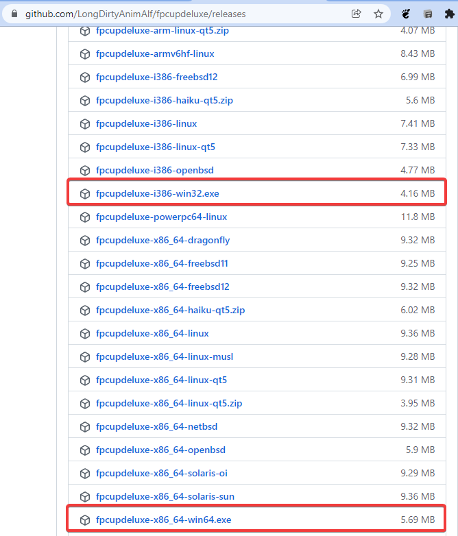
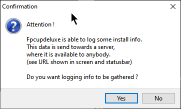
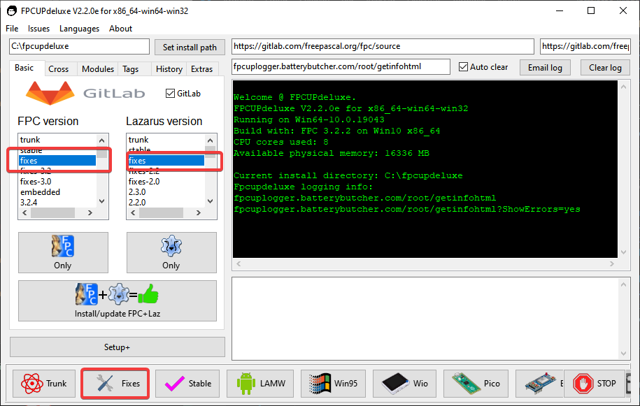
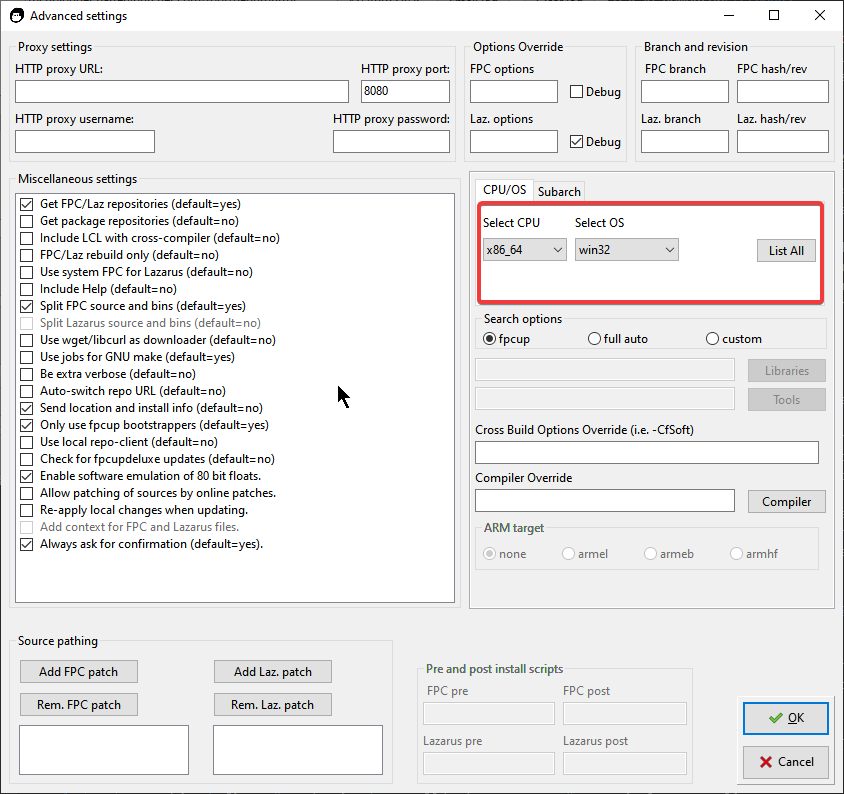

É mais simples uma instalação manual com o Lazarus+FPC, mas não é a mais rápida, deveras esse método é o mais lento de todos, mas tem suas vantagens: instalação homeuser. Instalação homeuser quer dizer que não precisamos de permissão especial de administrador para instalar instalar, configurar e/ou usar. A instalação ficará numa pasta comum que vocÊ tenha permissão e tudo funcionará a contento. Uma outra característica, o fpcupdeluge baixa e compila tanto o FreePascal(FPC daqui em diante) como também o Lazarus e por essa razão, o o programa será otimizado para o processador que estiver usando
Eu prefiro este método de instalação na maioria das vezes.
Visite a página:
https://github.com/LongDirtyAnimAlf/fpcupdeluxe/releases

Note na imagem acima que sublinhei duas versões:win32 e win64, por que?
A versão 64bits também compila para 32bits, então porque sugerir a versão 32bits? A resposta reside
que os componentes como o Zeos que fazem acesso a banco de dados usam uma DLL que chamamos de
cliente de banco de dados e essa deve ser 32 ou 64bits de acordo com o aplicativo
que irá consumi-la. Resumidamente: se o Lazarus é 64bits então a DLL cliente também deve ser 64bits.
Outros componentes que também façam uso de DLL em tempo de design tem a mesma regra.
Então acaba sendo mais fácil no ambiente Windows obter e consumir DLLs em 32bits.
Você não esta impedindo de usar a versão 64bits da IDE, mas se o fizer lembre-se sempre de que a IDE em tempo de design exigirá que consuma DLLs da mesma plataforma, isto é, 64bits.
Na distribuição de nossa aplicação, a nossa IDE ser 64bits ou 32bits não tem importância, o importante é que aplicativo.exe vai consumir DLLs da mesma plataforma seja 32 ou 64bits.
Mais tarde, notará que em se tratando de Windows e aplicações comerciais, é melhor trabalhar com 32bits porque uma aplicação assim roda em qualquer Windows. Um aplicativo integralmente 64bits exigiria esforço em distribuir duas versões do mesmo programa sem nenhum ganho adicional para quem o recebe ou quem o comercializa, alias este ultimo acarretaria apenas em mais esforço.
Passo #1: Execute o instalador do fpcupdeluxe.exe, é provavel que lhe apareça esta pergunta:

Responda "Yes" se concordar em enviar dados anônimos de sua instalação para o servidor dos desenvolvedores, isso pode ajudar na melhoria do programa.
Passo #2: Na tela seguinte selecione como FPC Version a opção fixes e para Lazarus version também fixes, depois Install/update FPC+Laz ou simplesmente clique em Fixes e o instalador escolherá todos os "fixes" automaticamente e prosseguirá com a instalação sem nenhuma assistência da sua parte:

Passo #3(alterantivo): Alternativamente você poderá clicar em Setup+, lá você encontra algumas opções bacanas que podem te ajudar a definir critérios de instalação, por exemplo, o alvo de suas compilações:

Passo #4: Caso não tenha iniciado a instalação ainda, clique no botão:
E então prepare-se, a instalação é bastante demorada. Eu costumo instalar o FPC separadamente e personalizar o fpcupdeluge para usar FPC pré-instalado, isso me salva de um tempo ainda maior.
IMPORTANTE: No final da instalação será gerado um atalho intitulado Lazarus_fpcupdeluxe. Execute-o sempre por este atalho, evite dar um duplo clique no executável na pasta de instalação, pois a execução pelo atalho faz uso do parametro --pcp=C:\pasta\de\instalacao\do\lazarus\configs que faz a configuração do Lazarus ir para o local indicado. Se executar sem o atalho ou sem o parametro, o Lazarus funcionará, mas as configurações estarão no default.